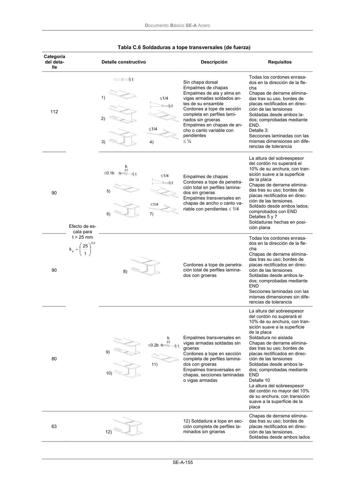

DB-SE-A Acero · edición 2007-10-23 · capa oficial
Documento DB-SE-A-oficial · SHA-256 del PDF 9ed9ea694aabfbda3bfbbef40dfe9223fde05d13c35bc2ba9751e5a96a22a64f
Página física 157 de 168.
Copia fiel del PDF fuente · Fuente oficial
Ficha de la disposición en la fuente oficial
Formato: Texto de la página (Markdown)
Documento Básico SE-A Acero SE-A-155 Tabla C.6 Soldaduras a tope transversales (de fuerza) Categoría del deta- lle Detalle constructivo Descripción Requisitos 112 Sin chapa dorsal Empalmes de chapas Empalmes de ala y alma en vigas armadas soldados an- tes de su ensamble Cordones a tope de sección completa en perfiles lami- nados sin groeras Empalmes en chapas de an- cho o canto variable con pendientes ≤ ¼ Todas los cordones enrasa- dos en la dirección de la fle- cha Chapas de derrame elimina- das tras su uso, bordes de placas rectificados en direc- ción de las tensiones Soldadas desde ambos la- dos; comprobadas mediante END. Detalle 3: Secciones laminadas con las mismas dimensiones sin dife- rencias de tolerancia 90 Empalmes de chapas Cordones a tope de penetra- ción total en perfiles lamina- dos sin groeras Empalmes transversales en chapas de ancho o canto va- riable con pendientes ≤ 1/4 La altura del sobreespesor del cordón no superará el 10% de su anchura, con tran- sición suave a la superficie de la placa Chapas de derrame elimina- das tras su uso; bordes de placas rectificados en direc- ción de las tensiones. Soldado desde ambos lados; comprobados con END Detalles 5 y 7 Soldaduras hechas en posi- ción plana 90 Cordones a tope de penetra- ción total de perfiles lamina- dos con groeras Todas los cordones enrasa- dos en la dirección de la fle- cha Chapas de derrame elimina- das tras su uso; bordes de placas rectificados en direc- ción de las tensiones Soldadas desde ambos la- dos; comprobadas mediante END Secciones laminadas con las mismas dimensiones sin dife- rencias de tolerancia 80 Efecto de es- cala para t > 25 mm 2 , 0 s t 25 k = Empalmes transversales en vigas armadas soldadas sin groeras Cordones a tope en sección completa de perfiles lamina- dos con groeras Empalmes transversales en chapas, secciones laminadas o vigas armadas La altura del sobreespesor del cordón no superará el 10% de su anchura, con tran- sición suave a la superficie de la placa Soldadura no aislada Chapas de derrame elimina- das tras su uso; bordes de placas rectificados en direc- ción de las tensiones Soldadas desde ambos la- dos; comprobadas mediante END Detalle 10 La altura del sobreespesor del cordón no mayor del 10% de su anchura, con transición suave a la superficie de la placa 63 12) Soldadura a tope en sec- ción completa de perfiles la- minados sin groeras Chapas de derrame elimina- das tras su uso; bordes de placas rectificados en direc- ción de las tensiones. Soldadas desde ambos lados
